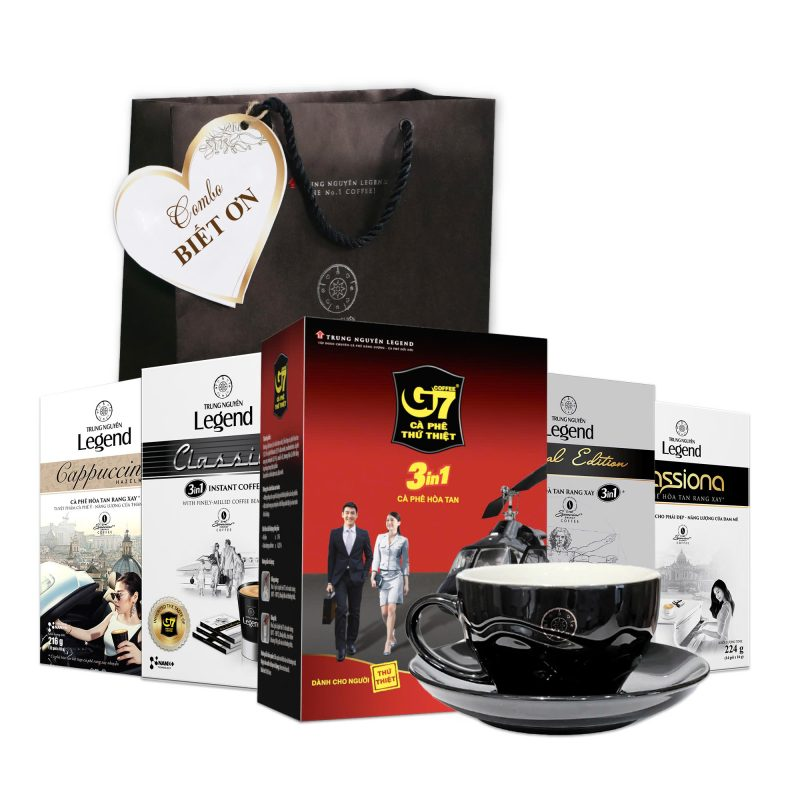
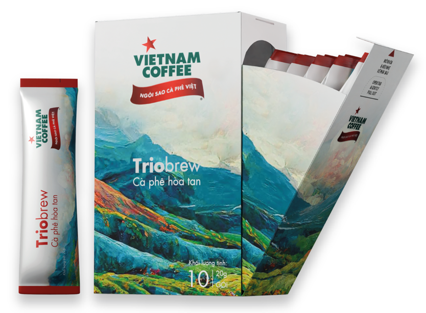
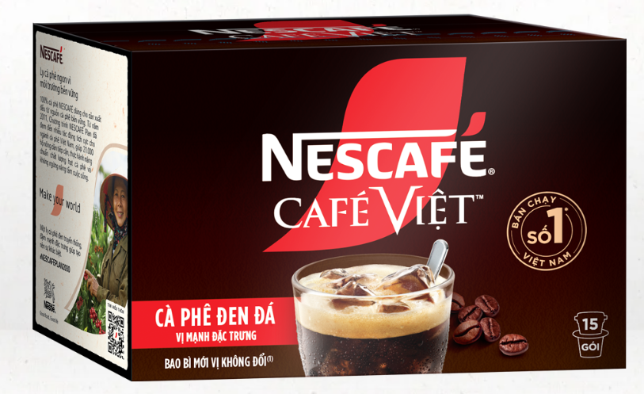

Trung Nguyen Coffee is a leading famous coffee brand in Vietnam, established in 1996 in Buon Ma Thuot, Dak Lak.
This brand stands out with the mission of elevating the cultural value of Vietnamese coffee, combining traditional flavors and modern technology to create high-quality products.
Trung Nguyen offers a variety of coffees such as roasted, instant coffee and especially traditional filter coffee.
With a nationwide coffee shop system and a presence in more than 60 countries, Trung Nguyen is not only a symbol of Vietnamese coffee but also contributes to promoting Vietnamese coffee culture to the world.
The brand's signature slogan is "Spark Creativity," reflecting the vision of comprehensive and sustainable development

Vinacoffee, or Vietnam Coffee Corporation, is one of the leading enterprises in the coffee industry in Vietnam.
Established in 1982, Vinacoffee specializes in producing, processing and trading coffee products, including green coffee, roasted and ground coffee and instant coffee.
With a wide network of operations, this brand not only serves the domestic market but also exports Vietnamese coffee to more than 80 countries, contributing to affirming the position of Vietnamese coffee on the world map.
Vinacoffee always focuses on product quality and sustainability in production, closely linked to the development of Vietnam's coffee agriculture industry.

Nescafé is a globally renowned coffee brand owned by Nestlé Group (Switzerland). First launched in 1938, Nescafé specializes in providing high-quality instant, roasted and capsule coffee products to meet the diverse needs of consumers.
This brand stands out for its convenience and rich flavors, loved in more than 180 countries. Nescafé not only focuses on user experience but also commits to sustainable development through programs to support coffee farmers and protect the environment, such as the Nescafé Plan initiative.
